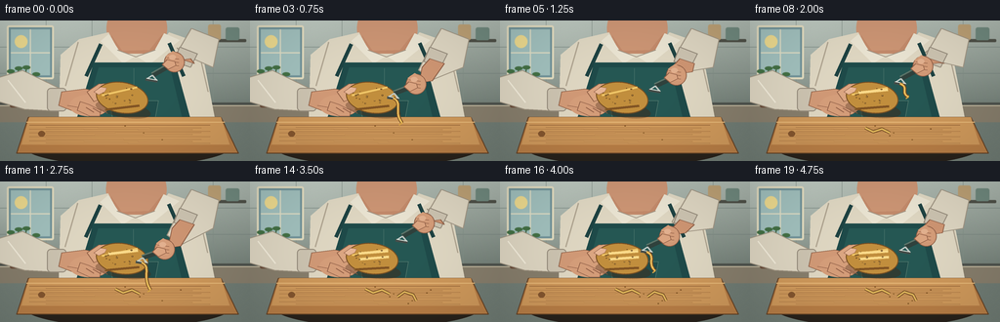
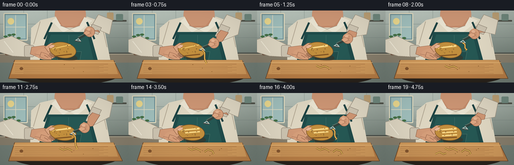
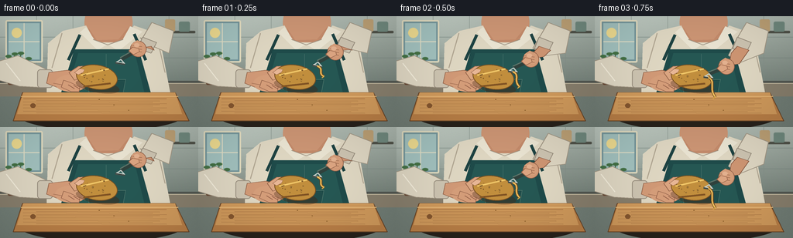

CODING AGENTS AS PIXEL WORLD MODELS
traex/GPT-5.6-Sol · motion_rationality_0022
点击播放 · 原生 RGB 像素
逐轮保存的候选
回放视频、检查图与代码变化。
每份候选均可单独播放。实际图片检查记录在下方工具轨迹中。
候选 01播放与检查图
点击播放 · 原生 RGB 像素

展开代码变化
--- 上一保存版本
+++ 本次保存版本
@@ -0,0 +1,247 @@
+from pathlib import Path
+import math
+import numpy as np
+from PIL import Image, ImageDraw, ImageFilter
+import artifact_io
+
+# Hand-painted vector animation, rendered large and downsampled for antialiasing.
+W, H, SS = 256, 144, 4
+SW, SH = W * SS, H * SS
+rng = np.random.default_rng(2202)
+
+def q(v): return int(round(v * SS))
+def pts(seq): return [(q(x), q(y)) for x, y in seq]
+def ellipse(d, box, fill, outline=None, width=1):
+ d.ellipse(tuple(q(x) for x in box), fill=fill, outline=outline, width=q(width) if outline else 1)
+def rect(d, box, fill, outline=None, width=1, radius=0):
+ box = tuple(q(x) for x in box)
+ if radius:
+ d.rounded_rectangle(box, q(radius), fill=fill, outline=outline, width=q(width) if outline else 1)
+ else:
+ d.rectangle(box, fill=fill, outline=outline, width=q(width) if outline else 1)
+def poly(d, p, fill, outline=None, width=1):
+ p2 = pts(p); d.polygon(p2, fill=fill)
+ if outline: d.line(p2 + [p2[0]], fill=outline, width=q(width), joint='curve')
+def line(d, p, fill, width=1, joint='curve'):
+ d.line(pts(p), fill=fill, width=q(width), joint=joint)
+def bezier(p0,p1,p2,p3,n=20):
+ out=[]
+ for t in np.linspace(0,1,n):
+ u=1-t
+ out.append((u**3*p0[0]+3*u*u*t*p1[0]+3*u*t*t*p2[0]+t**3*p3[0],
+ u**3*p0[1]+3*u*u*t*p1[1]+3*u*t*t*p2[1]+t**3*p3[1]))
+ return out
+
+def rotated_ellipse(im, center, size, angle, fill, outline=None, outline_w=1):
+ # Isolated layer ensures smooth rotated organic props.
+ pad = 8
+ ww, hh = size
+ layer = Image.new('RGBA', (q(ww+pad*2),q(hh+pad*2)), (0,0,0,0))
+ ld=ImageDraw.Draw(layer)
+ ld.ellipse((q(pad),q(pad),q(pad+ww),q(pad+hh)), fill=fill,
+ outline=outline, width=q(outline_w) if outline else 1)
+ layer=layer.rotate(angle, resample=Image.Resampling.BICUBIC, expand=True)
+ im.alpha_composite(layer,(q(center[0])-layer.width//2,q(center[1])-layer.height//2))
+
+def make_background():
+ yy, xx = np.mgrid[0:SH,0:SW]
+ # Soft warm kitchen lighting with a sunny left side.
+ top=np.array([177,188,179.],float); bot=np.array([113,125,117.],float)
+ t=np.clip(yy/(95*SS),0,1)[...,None]
+ a=top*(1-t)+bot*t
+ glow=18*np.exp(-((xx-38*SS)/(80*SS))**2-((yy-22*SS)/(55*SS))**2)[...,None]
+ noise=rng.normal(0,0.9,(SH,SW,1))
+ a=np.clip(a+glow+noise,0,255).astype(np.uint8)
+ im=Image.fromarray(a,'RGB').convert('RGBA'); d=ImageDraw.Draw(im)
+ # backsplash grout and cabinetry/window, kept subdued and out of focus
+ for y in (27,54,81): line(d,[(0,y),(256,y)],(118,132,126,100),0.6)
+ for x in (47,94,218): line(d,[(x,0),(x,84)],(130,143,136,80),0.6)
+ rect(d,(7,5,55,60),(114,148,154,255),(229,222,193,220),2,2)
+ rect(d,(11,9,51,56),(162,193,190,255))
+ line(d,[(31,9),(31,56)],(224,222,198,210),1.3)
+ line(d,[(11,33),(51,33)],(224,222,198,210),1.3)
+ # sun shapes through window
+ ellipse(d,(15,15,28,28),(238,219,144,160))
+ # shelves and jars at right
+ rect(d,(204,19,252,22),(79,81,72,150),radius=1)
+ rect(d,(213,4,226,20),(188,160,117,255),radius=2)
+ rect(d,(231,7,245,20),(112,137,126,255),radius=2)
+ # counter
+ rect(d,(0,84,256,104),(80,84,78,255))
+ rect(d,(0,87,256,104),(135,126,108,255))
+ line(d,[(0,87),(256,87)],(205,195,168,255),1)
+ # blurred herb pot left
+ rect(d,(10,66,35,89),(104,73,53,255),radius=2)
+ for ex,ey,cx,cy in [(18,68,11,52),(24,69,27,48),(16,70,19,49),(28,70,37,55)]:
+ line(d,[(ex,ey),(cx,cy)],(58,95,60,255),1.3)
+ ellipse(d,(cx-4,cy-2,cx+4,cy+2),(68,113,69,255))
+ return im.filter(ImageFilter.GaussianBlur(q(.35)))
+
+BG=make_background()
+# fixed potato pore layout in local coordinates
+pores=[(rng.uniform(-20,20),rng.uniform(-10,10),rng.uniform(.35,1.0)) for _ in range(23)]
+
+def potato_xy(lx,ly,cx,cy,ang):
+ a=math.radians(ang); return (cx+lx*math.cos(a)-ly*math.sin(a), cy+lx*math.sin(a)+ly*math.cos(a))
+
+def draw_frame(fi):
+ im=BG.copy(); d=ImageDraw.Draw(im,'RGBA')
+ # tiny breathing/sway keeps the person alive but doesn't disturb the task
+ sway=0.6*math.sin(fi*0.42)
+ # person: lower face, shirt and apron, behind working arms
+ ellipse(d,(109+sway,-22,171+sway,38),(205,150,117,255))
+ poly(d,[(114+sway,15),(125+sway,31),(153+sway,30),(166+sway,14),(165+sway,52),(113+sway,51)],(196,139,107,255))
+ # shirt silhouette and shoulders
+ poly(d,[(81+sway,19),(111+sway,12),(123+sway,34),(157+sway,34),(173+sway,12),(205+sway,23),(220,101),(60,104),(62,35)],(224,216,195,255))
+ line(d,[(80+sway,22),(67+sway,67)],(177,166,146,180),1.2)
+ line(d,[(202+sway,25),(213+sway,73)],(177,166,146,180),1.2)
+ # neck edge/collar
+ poly(d,[(111+sway,14),(122+sway,31),(139+sway,36),(126+sway,44),(103+sway,21)],(235,229,211,255))
+ poly(d,[(168+sway,13),(158+sway,31),(139+sway,36),(153+sway,45),(184+sway,20)],(235,229,211,255))
+ line(d,[(120+sway,30),(139+sway,37),(159+sway,30)],(162,150,133,180),1)
+ # apron body and straps
+ line(d,[(103+sway,24),(88+sway,57)],(30,67,67,255),4)
+ line(d,[(173+sway,23),(188+sway,57)],(30,67,67,255),4)
+ poly(d,[(96+sway,43),(179+sway,43),(198+sway,112),(75+sway,112)],(31,75,74,255))
+ poly(d,[(101+sway,48),(174+sway,48),(189+sway,111),(83+sway,111)],(38,88,84,255))
+ line(d,[(137+sway,49),(137+sway,105)],(64,108,101,150),.7)
+ # pocket/embroidered highlight
+ poly(d,[(112,82),(162,82),(158,104),(116,104)],(33,77,75,160),(91,129,116,100),.6)
+
+ # cutting board and cast shadows
+ # board shadow on counter
+ ellipse(d,(22,105,239,149),(40,34,27,105))
+ poly(d,[(29,99),(226,99),(244,136),(17,136)],(184,126,70,255),(102,68,39,255),1)
+ poly(d,[(30,99),(226,99),(235,127),(22,127)],(207,153,91,255))
+ line(d,[(27,104),(230,104)],(231,184,120,180),1)
+ # grain
+ for j in range(10):
+ y=107+j*2.0+(j%2)*.3
+ x0=30+(j*17)%34
+ line(d,[(x0,y),(215-(j%3)*9,y+0.8*math.sin(j))],(142,92,51,55),.45)
+ ellipse(d,(39,113,46,119),(132,86,47,120))
+
+ # peel scraps already on board, increasing only after each completed stroke
+ completed=fi//7
+ base_scraps=[[(118,110),(126,114),(135,111),(143,115)],
+ [(151,118),(158,113),(167,116),(170,122)],
+ [(99,122),(108,118),(115,122),(121,120)]]
+ for k in range(completed):
+ pp=base_scraps[k]
+ line(d,pp,(116,76,35,170),3.2)
+ line(d,pp,(224,183,92,255),1.7)
+
+ # left rolled sleeve and forearm approaching potato, all behind it
+ poly(d,[(-4,59),(23,51),(64,71),(61,93),(25,91),(-5,82)],(222,214,194,255),(163,151,132,180),1)
+ line(d,[(8,61),(26,84)],(244,238,220,180),1.2)
+ rect(d,(48,69,68,93),(205,196,177,255),(152,142,126,180),1,4)
+ # left wrist and palm
+ poly(d,[(63,73),(87,70),(111,75),(119,86),(104,96),(78,94),(60,87)],(210,154,119,255),(139,91,66,180),.8)
+ ellipse(d,(71,76,112,98),(214,159,123,255))
+ # thumb behind top-left of potato
+ poly(d,[(89,73),(101,65),(116,64),(119,70),(109,78),(96,83)],(220,166,130,255),(147,98,72,200),.8)
+ line(d,[(69,87),(91,91),(100,95)],(151,99,73,120),.8)
+
+ # Potato changes orientation slightly after each peel, like the supporting hand rotates it.
+ cyc=fi%7
+ if cyc<=4:
+ p=(cyc/4); p=p*p*(3-2*p); active=True
+ else:
+ p=1-(cyc-4)/2; active=False
+ ang=-10+completed*2+0.5*math.sin(fi*.35)
+ pcx,pcy=125,79
+ # soft shadow under potato
+ rotated_ellipse(im,(126,91),(57,16),ang,(68,43,25,85))
+ # potato base, gold edge and highlight
+ rotated_ellipse(im,(pcx,pcy),(54,32),ang,(194,143,62,255),(117,78,35,255),1)
+ d=ImageDraw.Draw(im,'RGBA')
+ # lower warm shading and upper soft shine following the potato orientation
+ a=math.radians(ang)
+ edge1=potato_xy(-20,-6,pcx,pcy,ang); edge2=potato_xy(17,-8,pcx,pcy,ang)
+ line(d,[edge1,edge2],(240,198,104,110),2.0)
+ edge1=potato_xy(-19,9,pcx,pcy,ang); edge2=potato_xy(16,11,pcx,pcy,ang)
+ line(d,[edge1,edge2],(129,84,36,80),2.4)
+ # previous peeled bands are cleaner and pale, laid along the long axis
+ for k in range(completed):
+ ly=-7+k*6
+ x1=potato_xy(-13,ly,pcx,pcy,ang); x2=potato_xy(17,ly+1,pcx,pcy,ang)
+ line(d,[x1,x2],(245,210,126,235),3.0)
+ line(d,[x1,x2],(255,226,151,125),1.0)
+ # pores / potato eyes in transformed local coordinates
+ for lx,ly,rr in pores:
+ if abs(ly) < 12:
+ x,y=potato_xy(lx,ly,pcx,pcy,ang)
+ ellipse(d,(x-rr,y-rr*.7,x+rr,y+rr*.7),(112,76,34,175))
+ if rr>.65: ellipse(d,(x-.25,y-.5,x+.25,y),(241,200,111,160))
+
+ # fingers wrap in front of potato along its lower-left side
+ poly(d,[(82,83),(91,86),(103,92),(102,98),(92,98),(79,92)],(214,158,122,255),(143,94,70,180),.7)
+ for j in range(3):
+ x=88+j*7
+ line(d,[(x,89+j*.7),(x+8,94+j*.5)],(145,94,70,130),.65)
+ # thumbnail makes hand pose legible
+ poly(d,[(96,73),(103,68),(109,69),(107,73),(101,76)],(232,183,150,255),(154,105,81,150),.55)
+
+ # Right arm: elbow/forearm follows the hand, wrist bends naturally.
+ # Peeling down on frames 0-4; lifted return on 5-6.
+ hx=178-10*p + (7 if not active else 0)
+ hy=42+27*p
+ wrist=(hx+10,hy-8)
+ poly(d,[(196,8),(224,19),(218,48),(wrist[0]+7,wrist[1]+4),(wrist[0]-7,wrist[1]-6),(183,30)],
+ (222,214,194,255),(162,151,133,170),1)
+ # rolled cuff
+ poly(d,[(184,27),(202,34),(195,48),(178,42)],(205,196,177,255),(148,138,122,180),1)
+ # exposed wrist
+ poly(d,[(184,39),(199,44),(wrist[0]+7,wrist[1]+5),(wrist[0]-6,wrist[1]+7),(176,48)],
+ (207,150,115,255),(139,91,67,160),.8)
+
+ # Peeler is drawn before the gripping fingers. Handle axis runs down-left from fist.
+ bx=151-10*p + (8 if not active else 0)
+ by=58+22*p
+ # handle from fist toward blade
+ line(d,[(hx+1,hy+1),(bx+5,by-2)],(48,66,61,255),5.2)
+ line(d,[(hx,hy-1),(bx+4,by-4)],(91,116,105,255),1.5)
+ # metal Y arms and blade transverse to the stroke
+ line(d,[(bx+5,by-2),(bx-1,by+2)],(190,200,195,255),1.8)
+ line(d,[(bx+5,by-2),(bx+10,by+4)],(190,200,195,255),1.8)
+ line(d,[(bx-2,by+2),(bx+10,by+4)],(70,78,74,255),3.0)
+ line(d,[(bx-1,by+1),(bx+10,by+3)],(231,238,229,255),1.0)
+
+ # right gripping hand / fist with four curled fingers
+ ellipse(d,(hx-10,hy-10,hx+11,hy+11),(211,154,119,255),(139,91,67,190),.8)
+ poly(d,[(hx-8,hy-6),(hx-1,hy-11),(hx+8,hy-6),(hx+9,hy+3),(hx+3,hy+7),(hx-5,hy+5)],(214,158,122,255))
+ # visible fingers crossing handle
+ for j in range(3):
+ yy=hy-4+j*3.5
+ line(d,[(hx-7,yy),(hx+5,yy+1.5)],(145,95,70,150),.8)
+ ellipse(d,(hx-5,hy-7,hx+2,hy-2),(228,178,144,255))
+ # thumb around handle
+ poly(d,[(hx-7,hy-2),(hx-12,hy+3),(hx-6,hy+8),(hx+2,hy+4),(hx+1,hy)],(221,166,130,255),(145,95,70,160),.65)
+
+ # Fresh peel curls away from contact only on the cutting stroke.
+ if active and p>.05:
+ start=(bx+4,by+3)
+ L=7+17*p
+ curve=bezier(start,(bx+14,by+7),(bx+4,by+11+L*.25),(bx+13,by+7+L),18)
+ line(d,curve,(117,75,32,170),3.4)
+ line(d,curve,(238,194,95,255),1.7)
+ # loose pointed end
+ x,y=curve[-1]; line(d,[(x,y),(x-3,y+2)],(219,169,71,240),1.2)
+
+ # a few crumbs, increasing as work proceeds
+ for k in range(3+completed*2):
+ x=128+(k*19)%61; y=108+(k*7)%18
+ ellipse(d,(x-.7,y-.4,x+.7,y+.5),(132,88,39,150))
+
+ # Warm foreground light and slight cinematic vignette at native high res.
+ arr=np.array(im.convert('RGB'),dtype=np.float32)
+ yy,xx=np.mgrid[0:SH,0:SW]
+ vign=1-0.13*np.clip(((xx-SW/2)/(SW*.69))**2+((yy-SH/2)/(SH*.82))**2,0,1)
+ arr*=vign[...,None]
+ arr=np.clip(arr,0,255).astype(np.uint8)
+ out=Image.fromarray(arr).resize((W,H),Image.Resampling.LANCZOS)
+ return np.asarray(out,dtype=np.uint8)
+
+frames=np.stack([draw_frame(i) for i in range(20)])
+assert frames.shape==(20,144,256,3) and frames.dtype==np.uint8
+artifact_io.save(frames, Path(__file__).resolve().parent)
候选 02播放与检查图
点击播放 · 原生 RGB 像素


展开代码变化
--- 上一保存版本
+++ 本次保存版本
@@ -122,11 +122,14 @@
ellipse(d,(39,113,46,119),(132,86,47,120))
# peel scraps already on board, increasing only after each completed stroke
+ # A strip lands on the board as soon as its downward pass is complete.
completed=fi//7
+ cycle_pos=fi%7
+ visible_done=completed + (1 if cycle_pos >= 5 else 0)
base_scraps=[[(118,110),(126,114),(135,111),(143,115)],
[(151,118),(158,113),(167,116),(170,122)],
[(99,122),(108,118),(115,122),(121,120)]]
- for k in range(completed):
+ for k in range(visible_done):
pp=base_scraps[k]
line(d,pp,(116,76,35,170),3.2)
line(d,pp,(224,183,92,255),1.7)
@@ -162,7 +165,7 @@
edge1=potato_xy(-19,9,pcx,pcy,ang); edge2=potato_xy(16,11,pcx,pcy,ang)
line(d,[edge1,edge2],(129,84,36,80),2.4)
# previous peeled bands are cleaner and pale, laid along the long axis
- for k in range(completed):
+ for k in range(visible_done):
ly=-7+k*6
x1=potato_xy(-13,ly,pcx,pcy,ang); x2=potato_xy(17,ly+1,pcx,pcy,ang)
line(d,[x1,x2],(245,210,126,235),3.0)
@@ -229,7 +232,7 @@
x,y=curve[-1]; line(d,[(x,y),(x-3,y+2)],(219,169,71,240),1.2)
# a few crumbs, increasing as work proceeds
- for k in range(3+completed*2):
+ for k in range(3+visible_done*2):
x=128+(k*19)%61; y=108+(k*7)%18
ellipse(d,(x-.7,y-.4,x+.7,y+.5),(132,88,39,150))
可观测工具轨迹
实际执行的命令与返回图片。
命令 1exit 0
/bin/bash -lc "cat prompt.txt && printf '\\n---RULES---\\n' && cat GENERATION_RULES.md && printf '\\n---SPEC---\\n' && cat task_spec.json"
命令 2exit 1
/bin/bash -lc "find . -maxdepth 2 -type f -printf '%p %s bytes\\n' | sort && printf '\\nTOOLS\\n' && command -v ffmpeg && python3 - <<'PY' import importlib.util for m in ['cv2','PIL','numpy','imageio','moviepy','cairo']: print(m, bool(importlib.util.find_spec(m))) PY"
命令 3exit 0
/bin/bash -lc 'cat artifact_io.py'
命令 4exit 0
/bin/bash -lc "which ffmpeg || true; which convert || true; python3 - <<'PY' import importlib.util for m in ['cv2','PIL','numpy','imageio','moviepy','cairo']: print(m, bool(importlib.util.find_spec(m))) PY"
命令 5exit 0
/bin/bash -lc "cat > generate.py <<'PY'
from pathlib import Path
import math
import numpy as np
from PIL import Image, ImageDraw, ImageFilter
import artifact_io
# Hand-painted vector animation, rendered large and downsampled for antialiasing.
W, H, SS = 256, 144, 4
SW, SH = W * SS, H * SS
rng = np.random.default_rng(2202)
def q(v): return int(round(v * SS))
def pts(seq): return [(q(x), q(y)) for x, y in seq]
def ellipse(d, box, fill, outline=None, width=1):
d.ellipse(tuple(q(x) for x in box), fill=fill, outline=outline, width=q(width) if outline else 1)
def rect(d, box, fill, outline=None, width=1, radius=0):
box = tuple(q(x) for x in box)
if radius:
d.rounded_rectangle(box, q(radius), fill=fill, outline=outline, width=q(width) if outline else 1)
else:
d.rectangle(box, fill=fill, outline=outline, width=q(width) if outline else 1)
def poly(d, p, fill, outline=None, width=1):
p2 = pts(p); d.polygon(p2, fill=fill)
if outline: d.line(p2 + [p2[0]], fill=outline, width=q(width), joint='curve')
def line(d, p, fill, width=1, joint='curve'):
d.line(pts(p), fill=fill, width=q(width), joint=joint)
def bezier(p0,p1,p2,p3,n=20):
out=[]
for t in np.linspace(0,1,n):
u=1-t
out.append((u**3*p0[0]+3*u*u*t*p1[0]+3*u*t*t*p2[0]+t**3*p3[0],
u**3*p0[1]+3*u*u*t*p1[1]+3*u*t*t*p2[1]+t**3*p3[1]))
return out
def rotated_ellipse(im, center, size, angle, fill, outline=None, outline_w=1):
# Isolated layer ensures smooth rotated organic props.
pad = 8
ww, hh = size
layer = Image.new('RGBA', (q(ww+pad*2),q(hh+pad*2)), (0,0,0,0))
ld=ImageDraw.Draw(layer)
ld.ellipse((q(pad),q(pad),q(pad+ww),q(pad+hh)), fill=fill,
outline=outline, width=q(outline_w) if outline else 1)
layer=layer.rotate(angle, resample=Image.Resampling.BICUBIC, expand=True)
im.alpha_composite(layer,(q(center[0])-layer.width//2,q(center[1])-layer.height//2))
def make_background():
yy, xx = np.mgrid[0:SH,0:SW]
# Soft warm kitchen lighting with a sunny left side.
top=np.array([177,188,179.],float); bot=np.array([113,125,117.],float)
t=np.clip(yy/(95*SS),0,1)[...,None]
a=top*(1-t)+bot*t
glow=18*np.exp(-((xx-38*SS)/(80*SS))**2-((yy-22*SS)/(55*SS))**2)[...,None]
noise=rng.normal(0,0.9,(SH,SW,1))
a=np.clip(a+glow+noise,0,255).astype(np.uint8)
im=Image.fromarray(a,'RGB').convert('RGBA'); d=ImageDraw.Draw(im)
# backsplash grout and cabinetry/window, kept subdued and out of focus
for y in (27,54,81): line(d,[(0,y),(256,y)],(118,132,126,100),0.6)
for x in (47,94,218): line(d,[(x,0),(x,84)],(130,143,136,80),0.6)
rect(d,(7,5,55,60),(114,148,154,255),(229,222,193,220),2,2)
rect(d,(11,9,51,56),(162,193,190,255))
line(d,[(31,9),(31,56)],(224,222,198,210),1.3)
line(d,[(11,33),(51,33)],(224,222,198,210),1.3)
# sun shapes through window
ellipse(d,(15,15,28,28),(238,219,144,160))
# shelves and jars at right
rect(d,(204,19,252,22),(79,81,72,150),radius=1)
rect(d,(213,4,226,20),(188,160,117,255),radius=2)
rect(d,(231,7,245,20),(112,137,126,255),radius=2)
# counter
rect(d,(0,84,256,104),(80,84,78,255))
rect(d,(0,87,256,104),(135,126,108,255))
line(d,[(0,87),(256,87)],(205,195,168,255),1)
# blurred herb pot left
rect(d,(10,66,35,89),(104,73,53,255),radius=2)
for ex,ey,cx,cy in [(18,68,11,52),(24,69,27,48),(16,70,19,49),(28,70,37,55)]:
line(d,[(ex,ey),(cx,cy)],(58,95,60,255),1.3)
ellipse(d,(cx-4,cy-2,cx+4,cy+2),(68,113,69,255))
return im.filter(ImageFilter.GaussianBlur(q(.35)))
BG=make_background()
# fixed potato pore layout in local coordinates
pores=[(rng.uniform(-20,20),rng.uniform(-10,10),rng.uniform(.35,1.0)) for _ in range(23)]
def potato_xy(lx,ly,cx,cy,ang):
a=math.radians(ang); return (cx+lx*math.cos(a)-ly*math.sin(a), cy+lx*math.sin(a)+ly*math.cos(a))
def draw_frame(fi):
im=BG.copy(); d=ImageDraw.Draw(im,'RGBA')
# tiny breathing/sway keeps the person alive but doesn't disturb the task
sway=0.6*math.sin(fi*0.42)
# person: lower face, shirt and apron, behind working arms
ellipse(d,(109+sway,-22,171+sway,38),(205,150,117,255))
poly(d,[(114+sway,15),(125+sway,31),(153+sway,30),(166+sway,14),(165+sway,52),(113+sway,51)],(196,139,107,255))
# shirt silhouette and shoulders
poly(d,[(81+sway,19),(111+sway,12),(123+sway,34),(157+sway,34),(173+sway,12),(205+sway,23),(220,101),(60,104),(62,35)],(224,216,195,255))
line(d,[(80+sway,22),(67+sway,67)],(177,166,146,180),1.2)
line(d,[(202+sway,25),(213+sway,73)],(177,166,146,180),1.2)
# neck edge/collar
poly(d,[(111+sway,14),(122+sway,31),(139+sway,36),(126+sway,44),(103+sway,21)],(235,229,211,255))
poly(d,[(168+sway,13),(158+sway,31),(139+sway,36),(153+sway,45),(184+sway,20)],(235,229,211,255))
line(d,[(120+sway,30),(139+sway,37),(159+sway,30)],(162,150,133,180),1)
# apron body and straps
line(d,[(103+sway,24),(88+sway,57)],(30,67,67,255),4)
line(d,[(173+sway,23),(188+sway,57)],(30,67,67,255),4)
poly(d,[(96+sway,43),(179+sway,43),(198+sway,112),(75+sway,112)],(31,75,74,255))
poly(d,[(101+sway,48),(174+sway,48),(189+sway,111),(83+sway,111)],(38,88,84,255))
line(d,[(137+sway,49),(137+sway,105)],(64,108,101,150),.7)
# pocket/embroidered highlight
poly(d,[(112,82),(162,82),(158,104),(116,104)],(33,77,75,160),(91,129,116,100),.6)
# cutting board and cast shadows
# board shadow on counter
ellipse(d,(22,105,239,149),(40,34,27,105))
poly(d,[(29,99),(226,99),(244,136),(17,136)],(184,126,70,255),(102,68,39,255),1)
poly(d,[(30,99),(226,99),(235,127),(22,127)],(207,153,91,255))
line(d,[(27,104),(230,104)],(231,184,120,180),1)
# grain
for j in range(10):
y=107+j*2.0+(j%2)*.3
x0=30+(j*17)%34
line(d,[(x0,y),(215-(j%3)*9,y+0.8*math.sin(j))],(142,92,51,55),.45)
ellipse(d,(39,113,46,119),(132,86,47,120))
# peel scraps already on board, increasing only after each completed stroke
completed=fi//7
base_scraps=[[(118,110),(126,114),(135,111),(143,115)],
[(151,118),(158,113),(167,116),(170,122)],
[(99,122),(108,118),(115,122),(121,120)]]
for k in range(completed):
pp=base_scraps[k]
line(d,pp,(116,76,35,170),3.2)
line(d,pp,(224,183,92,255),1.7)
# left rolled sleeve and forearm approaching potato, all behind it
poly(d,[(-4,59),(23,51),(64,71),(61,93),(25,91),(-5,82)],(222,214,194,255),(163,151,132,180),1)
line(d,[(8,61),(26,84)],(244,238,220,180),1.2)
rect(d,(48,69,68,93),(205,196,177,255),(152,142,126,180),1,4)
# left wrist and palm
poly(d,[(63,73),(87,70),(111,75),(119,86),(104,96),(78,94),(60,87)],(210,154,119,255),(139,91,66,180),.8)
ellipse(d,(71,76,112,98),(214,159,123,255))
# thumb behind top-left of potato
poly(d,[(89,73),(101,65),(116,64),(119,70),(109,78),(96,83)],(220,166,130,255),(147,98,72,200),.8)
line(d,[(69,87),(91,91),(100,95)],(151,99,73,120),.8)
# Potato changes orientation slightly after each peel, like the supporting hand rotates it.
cyc=fi%7
if cyc<=4:
p=(cyc/4); p=p*p*(3-2*p); active=True
else:
p=1-(cyc-4)/2; active=False
ang=-10+completed*2+0.5*math.sin(fi*.35)
pcx,pcy=125,79
# soft shadow under potato
rotated_ellipse(im,(126,91),(57,16),ang,(68,43,25,85))
# potato base, gold edge and highlight
rotated_ellipse(im,(pcx,pcy),(54,32),ang,(194,143,62,255),(117,78,35,255),1)
d=ImageDraw.Draw(im,'RGBA')
# lower warm shading and upper soft shine following the potato orientation
a=math.radians(ang)
edge1=potato_xy(-20,-6,pcx,pcy,ang); edge2=potato_xy(17,-8,pcx,pcy,ang)
line(d,[edge1,edge2],(240,198,104,110),2.0)
edge1=potato_xy(-19,9,pcx,pcy,ang); edge2=potato_xy(16,11,pcx,pcy,ang)
line(d,[edge1,edge2],(129,84,36,80),2.4)
# previous peeled bands are cleaner and pale, laid along the long axis
for k in range(completed):
ly=-7+k*6
x1=potato_xy(-13,ly,pcx,pcy,ang); x2=potato_xy(17,ly+1,pcx,pcy,ang)
line(d,[x1,x2],(245,210,126,235),3.0)
line(d,[x1,x2],(255,226,151,125),1.0)
# pores / potato eyes in transformed local coordinates
for lx,ly,rr in pores:
if abs(ly) < 12:
x,y=potato_xy(lx,ly,pcx,pcy,ang)
ellipse(d,(x-rr,y-rr*.7,x+rr,y+rr*.7),(112,76,34,175))
if rr>.65: ellipse(d,(x-.25,y-.5,x+.25,y),(241,200,111,160))
# fingers wrap in front of potato along its lower-left side
poly(d,[(82,83),(91,86),(103,92),(102,98),(92,98),(79,92)],(214,158,122,255),(143,94,70,180),.7)
for j in range(3):
x=88+j*7
line(d,[(x,89+j*.7),(x+8,94+j*.5)],(145,94,70,130),.65)
# thumbnail makes hand pose legible
poly(d,[(96,73),(103,68),(109,69),(107,73),(101,76)],(232,183,150,255),(154,105,81,150),.55)
# Right arm: elbow/forearm follows the hand, wrist bends naturally.
# Peeling down on frames 0-4; lifted return on 5-6.
hx=178-10*p + (7 if not active else 0)
hy=42+27*p
wrist=(hx+10,hy-8)
poly(d,[(196,8),(224,19),(218,48),(wrist[0]+7,wrist[1]+4),(wrist[0]-7,wrist[1]-6),(183,30)],
(222,214,194,255),(162,151,133,170),1)
# rolled cuff
poly(d,[(184,27),(202,34),(195,48),(178,42)],(205,196,177,255),(148,138,122,180),1)
# exposed wrist
poly(d,[(184,39),(199,44),(wrist[0]+7,wrist[1]+5),(wrist[0]-6,wrist[1]+7),(176,48)],
(207,150,115,255),(139,91,67,160),.8)
# Peeler is drawn before the gripping fingers. Handle axis runs down-left from fist.
bx=151-10*p + (8 if not active else 0)
by=58+22*p
# handle from fist toward blade
line(d,[(hx+1,hy+1),(bx+5,by-2)],(48,66,61,255),5.2)
line(d,[(hx,hy-1),(bx+4,by-4)],(91,116,105,255),1.5)
# metal Y arms and blade transverse to the stroke
line(d,[(bx+5,by-2),(bx-1,by+2)],(190,200,195,255),1.8)
line(d,[(bx+5,by-2),(bx+10,by+4)],(190,200,195,255),1.8)
line(d,[(bx-2,by+2),(bx+10,by+4)],(70,78,74,255),3.0)
line(d,[(bx-1,by+1),(bx+10,by+3)],(231,238,229,255),1.0)
# right gripping hand / fist with four curled fingers
ellipse(d,(hx-10,hy-10,hx+11,hy+11),(211,154,119,255),(139,91,67,190),.8)
poly(d,[(hx-8,hy-6),(hx-1,hy-11),(hx+8,hy-6),(hx+9,hy+3),(hx+3,hy+7),(hx-5,hy+5)],(214,158,122,255))
# visible fingers crossing handle
for j in range(3):
yy=hy-4+j*3.5
line(d,[(hx-7,yy),(hx+5,yy+1.5)],(145,95,70,150),.8)
ellipse(d,(hx-5,hy-7,hx+2,hy-2),(228,178,144,255))
# thumb around handle
poly(d,[(hx-7,hy-2),(hx-12,hy+3),(hx-6,hy+8),(hx+2,hy+4),(hx+1,hy)],(221,166,130,255),(145,95,70,160),.65)
# Fresh peel curls away from contact only on the cutting stroke.
if active and p>.05:
start=(bx+4,by+3)
L=7+17*p
curve=bezier(start,(bx+14,by+7),(bx+4,by+11+L*.25),(bx+13,by+7+L),18)
line(d,curve,(117,75,32,170),3.4)
line(d,curve,(238,194,95,255),1.7)
# loose pointed end
x,y=curve[-1]; line(d,[(x,y),(x-3,y+2)],(219,169,71,240),1.2)
# a few crumbs, increasing as work proceeds
for k in range(3+completed*2):
x=128+(k*19)%61; y=108+(k*7)%18
ellipse(d,(x-.7,y-.4,x+.7,y+.5),(132,88,39,150))
# Warm foreground light and slight cinematic vignette at native high res.
arr=np.array(im.convert('RGB'),dtype=np.float32)
yy,xx=np.mgrid[0:SH,0:SW]
vign=1-0.13*np.clip(((xx-SW/2)/(SW*.69))**2+((yy-SH/2)/(SH*.82))**2,0,1)
arr*=vign[...,None]
arr=np.clip(arr,0,255).astype(np.uint8)
out=Image.fromarray(arr).resize((W,H),Image.Resampling.LANCZOS)
return np.asarray(out,dtype=np.uint8)
frames=np.stack([draw_frame(i) for i in range(20)])
assert frames.shape==(20,144,256,3) and frames.dtype==np.uint8
artifact_io.save(frames, Path(__file__).resolve().parent)
PY
python3 generate.py
find . -maxdepth 2 -type f -printf '%p %s bytes\\n' | sort | tail -30"命令 6exit 0
/bin/bash -lc 'git status --short 2>/dev/null || true'
命令 7exit 0
/bin/bash -lc "python3 generate.py && python3 - <<'PY'
import numpy as np, json
from pathlib import Path
from PIL import Image
p=Path('.')
a=np.load('pixels.npz')['pixels']
s=json.load(open('task_spec.json'))
print('pixels:',a.shape,a.dtype,'range',int(a.min()),int(a.max()))
print('frames:',len(list(Path('frames').glob('*.png'))))
for f in ['pixels.npz','index.html','inspection.png','transition_check.png','generate.py']:
print(f,Path(f).stat().st_size)
# temporal changes decoded direct from pngs
ims=np.stack([np.asarray(Image.open(f'frames/{i:02d}.png')) for i in range(20)])
print('rgb',ims.shape,ims.dtype)
print('mean abs frame deltas', [round(float(x),2) for x in np.abs(np.diff(ims.astype(int),axis=0)).mean((1,2,3))])
PY"保存候选 2 份；完成命令 7 次；可验证图片返回 0 张。原始 API 响应与完整日志保留在本地。